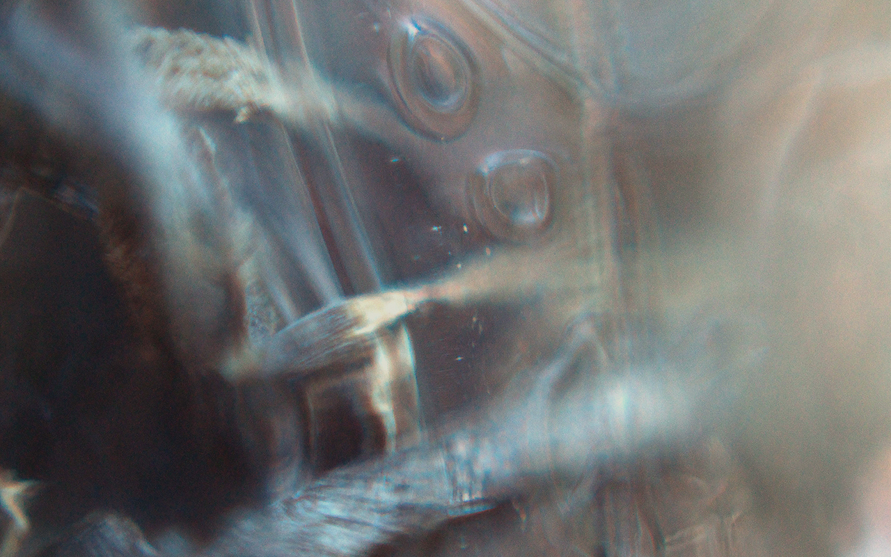
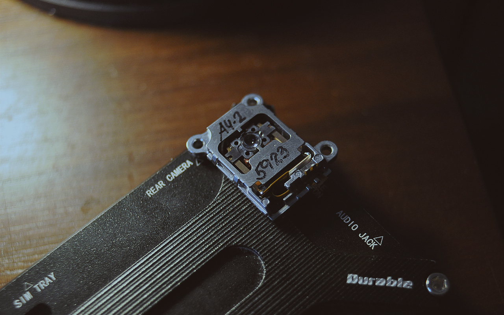
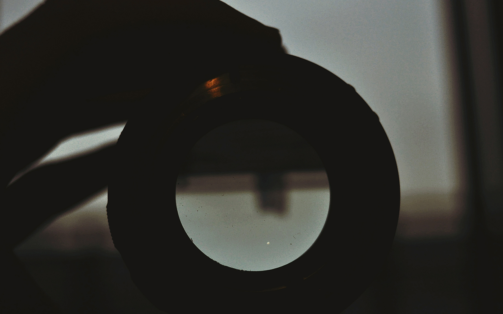
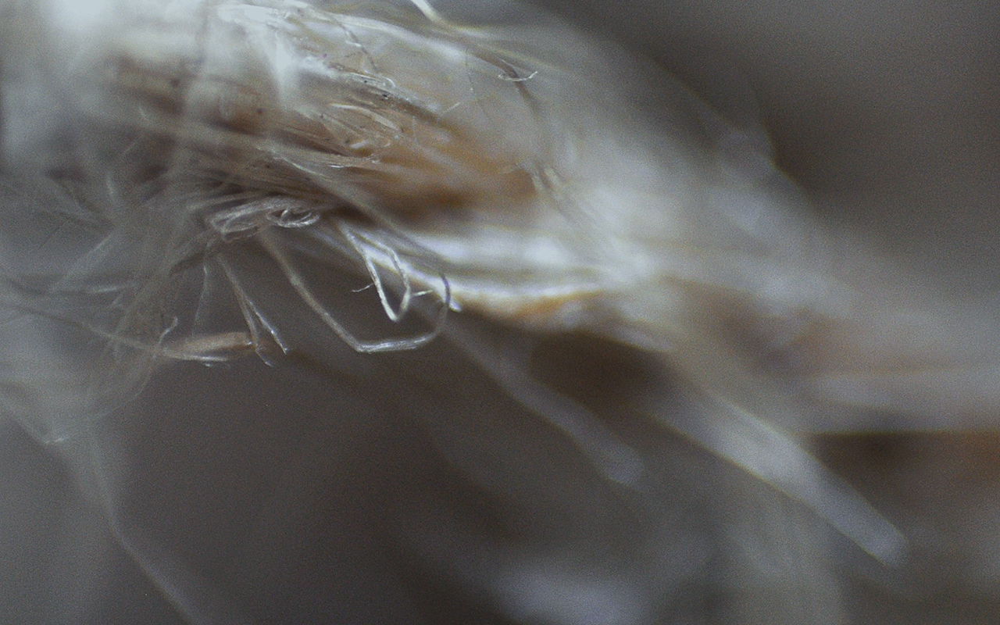
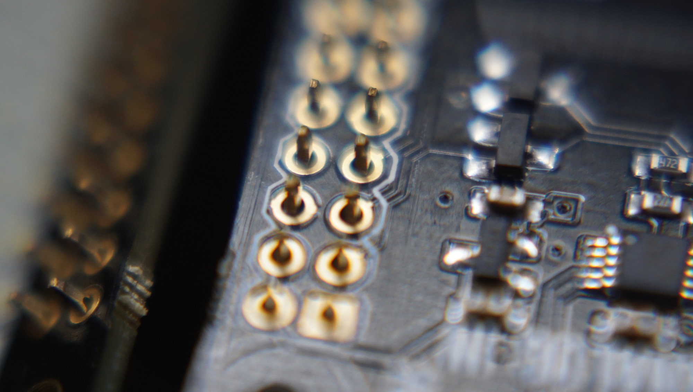

physical
photography
illustration
software
film
the sublime
personal
macro
black
infrared
travel
Caterpillar
The Macro album contains various shots from up close.
These were taken with the
Sony Alpha a6000
.
Cure Dents

Glass

Macro DIY iPhone

Building a telescope

Fibers

Raspberry Close Up